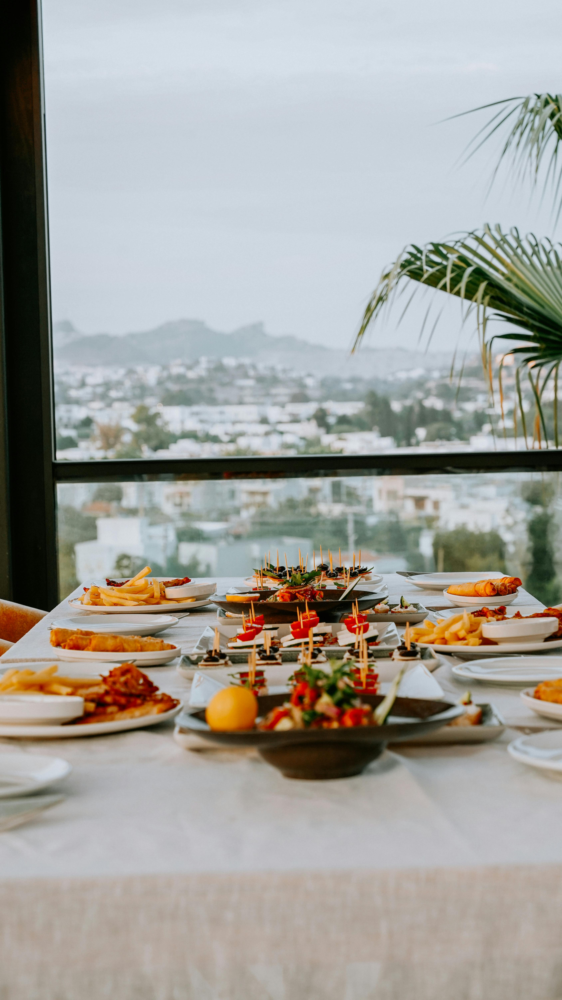
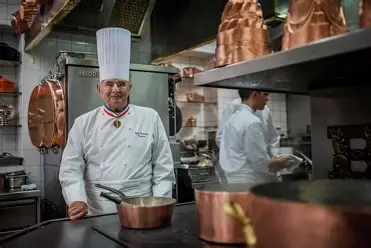
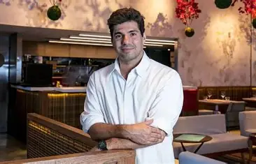

No coração de uma cidade que crescia entre tradições antigas e sonhos modernos, nasceu um restaurante destinado a se tornar muito mais do que um lugar para refeições. Seu nome era Saber Imperial. A história começou há muitas décadas, quando um jovem cozinheiro chamado Augusto Imperial viajou por diferentes regiões do país em busca de conhecimento gastronômico. Filho de agricultores, ele cresceu observando a mãe transformar ingredientes simples em banquetes memoráveis. Desde cedo compreendeu que a verdadeira riqueza de uma refeição não estava apenas nos alimentos, mas nas histórias, emoções e memórias que cada prato carregava. Durante anos, Augusto percorreu vilas, cidades costeiras, montanhas e mercados populares. Aprendeu receitas ancestrais com avós que cozinhavam em fogões a lenha, descobriu especiarias raras com comerciantes viajantes e aperfeiçoou técnicas modernas com chefs renomados. Cada lugar visitado lhe ensinou uma lição diferente sobre sabor, hospitalidade e cultura. Ao regressar à sua cidade natal, Augusto percebeu que queria criar algo único: um espaço onde o conhecimento culinário adquirido ao longo de sua jornada pudesse ser compartilhado com todos. Não desejava apenas abrir um restaurante; queria construir um legado. Foi assim que nasceu o nome Saber Imperial. A palavra "Saber" representava todo o conhecimento acumulado através de anos de estudo, experiência e paixão pela gastronomia. Já "Imperial" simbolizava a excelência, a grandeza e o compromisso de oferecer uma experiência digna da realeza, sem perder a simplicidade e o acolhimento que faziam parte de suas origens. Em uma antiga construção restaurada cuidadosamente, Augusto abriu as portas do restaurante. As paredes exibiam fotografias de suas viagens, utensílios tradicionais e obras de arte inspiradas em diferentes culturas. Cada detalhe do ambiente foi pensado para contar uma parte de sua história. Nos primeiros meses, o movimento era discreto. Alguns curiosos visitavam o local atraídos pela decoração elegante e pelo aroma que se espalhava pelas ruas. Quem entrava encontrava uma equipe dedicada a oferecer um atendimento caloroso e pratos preparados com atenção aos mínimos detalhes. O menu do Saber Imperial era diferente de tudo que a cidade conhecia. Cada receita combinava técnicas refinadas com ingredientes locais cuidadosamente selecionados. Os clientes não recebiam apenas uma refeição; recebiam uma narrativa servida à mesa. Havia pratos inspirados nas montanhas, representando força e tradição. Outros homenageavam o mar, simbolizando aventura e descoberta. As sobremesas eram criadas para despertar memórias afetivas, remetendo aos sabores da infância e aos encontros familiares. A reputação do restaurante começou a crescer rapidamente. Pessoas de diferentes regiões passaram a visitar o Saber Imperial. Empresários realizavam reuniões importantes em seus salões. Famílias comemoravam aniversários, casamentos e conquistas especiais. Turistas incluíam o restaurante em seus roteiros como uma parada obrigatória. Com o passar dos anos, o estabelecimento tornou-se um símbolo de excelência gastronômica. Mas o verdadeiro diferencial do Saber Imperial não estava apenas em seus pratos. Augusto acreditava que um restaurante de sucesso precisava contribuir para a comunidade. Por isso, criou programas de formação para jovens cozinheiros, oferecendo oportunidades para aqueles que sonhavam construir uma carreira na gastronomia. Muitos dos aprendizes que passaram por suas cozinhas tornaram-se chefs reconhecidos. Mesmo seguindo caminhos diferentes, todos carregavam consigo os valores aprendidos no Saber Imperial: respeito pelos ingredientes, dedicação ao trabalho e amor pela arte de servir. À medida que o restaurante crescia, novas gerações da família Imperial passaram a participar da gestão do negócio. Os filhos e netos de Augusto preservaram as receitas tradicionais enquanto introduziam inovações que mantinham o restaurante relevante em um mundo em constante transformação. A tecnologia foi incorporada sem comprometer a essência da casa. Reservas digitais, experiências gastronômicas interativas e eventos temáticos passaram a fazer parte da rotina. Ainda assim, cada cliente continuava sendo recebido com a mesma hospitalidade que caracterizava os primeiros dias do restaurante. Com o tempo, o Saber Imperial ganhou reconhecimento nacional. Críticos gastronômicos elogiavam sua capacidade de unir tradição e inovação. Revistas especializadas destacavam a qualidade de seus ingredientes e a consistência de seus serviços. Entretanto, para a família Imperial, o maior prêmio continuava sendo a satisfação dos clientes. Existiam histórias de casais que tiveram seu primeiro encontro no restaurante e voltaram anos depois para celebrar o casamento. Famílias que atravessavam gerações frequentando as mesmas mesas. Amigos que transformavam encontros simples em memórias inesquecíveis. Essas histórias passaram a fazer parte da identidade do Saber Imperial. Quando Augusto completou oitenta anos, foi organizada uma grande celebração em sua homenagem. Clientes antigos, colaboradores e parceiros reuniram-se para reconhecer o homem que havia transformado um sonho pessoal em uma instituição respeitada. Durante seu discurso, Augusto compartilhou uma reflexão que se tornaria o lema oficial do restaurante: "O verdadeiro sabor não está apenas no prato. Está no conhecimento que o inspira, nas pessoas que o preparam e nas memórias que ele cria." Essa frase passou a ser exibida na entrada principal do Saber Imperial. Hoje, o restaurante continua sua trajetória como referência de qualidade, tradição e inovação. Mais do que um estabelecimento gastronômico, tornou-se um símbolo de cultura, conhecimento e hospitalidade. Cada cliente que atravessa suas portas encontra uma experiência construída ao longo de décadas de dedicação. Cada prato servido carrega um pedaço da história iniciada por um jovem viajante que acreditava no poder da gastronomia para unir pessoas. E assim, o Saber Imperial continua escrevendo sua história, uma refeição de cada vez, mantendo vivo o legado de excelência que transformou um simples sonho em um verdadeiro império de sabores.
Mantemos receitas familiares autenticas que atravessam gerações.
Trabalhamos sempre com ingredientes frescos e selecionados diariamente.
Unimos tradições e criatividade para criar experiências únicas

